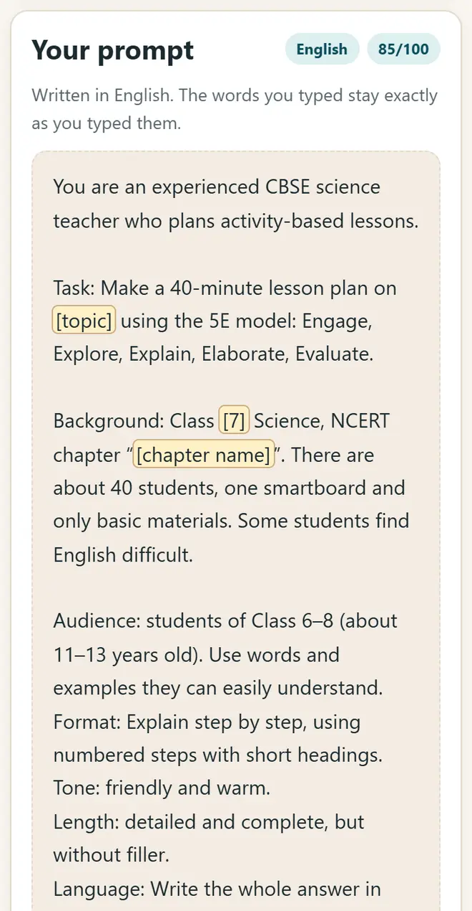
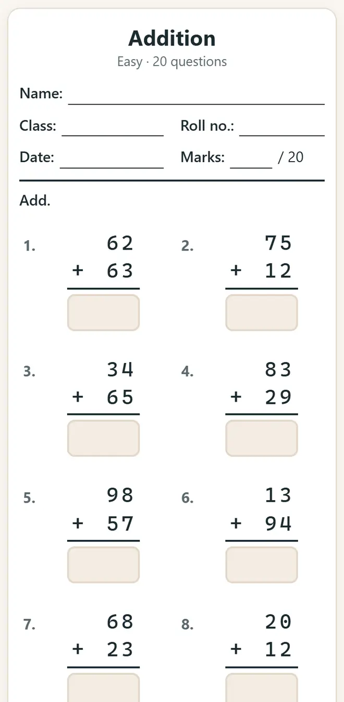

اساتذہ کے لیے مفت AI ٹولز: ہر ہفتے گھنٹوں کی بچت
Gemini یا ChatGPT سے سبق کا منصوبہ، پرنٹ کے قابل ورک شیٹ، کلاس کوئز، رپورٹ کارڈ اور سرٹیفکیٹ: ہر کام مفت، اپنی زبان میں اور طلبہ کا ڈیٹا دیے بغیر کیسے کریں، یہاں دیکھیں۔
مختصر جواب
کسی بھی مفت AI چیٹ بوٹ سے اچھا سبق کا منصوبہ اور سوالیہ پرچہ پانے کے لیے پرامپٹ بلڈر، جوابات کے ساتھ ورک شیٹ کے لیے ریاضی ورک شیٹ جنریٹر، کلاس کوئز اور WhatsApp مشق لنک کے لیے کوئز میکر اور پلیئر، اور نتائج کے لیے نمبر اور رپورٹ کارڈ استعمال کریں۔ سب مفت ہیں، لاگ اِن نہیں مانگتے اور ڈیٹا آپ کے آلے پر ہی رکھتے ہیں۔
مفت ٹولز کے ساتھ ایک استاد کا ہفتہ، مرحلہ وار
-
اچھے AI پرامپٹ سے سبق کی منصوبہ بندی کریں
پرامپٹ بلڈر کھولیں، سبق کا منصوبہ یا سوالیہ پرچہ جیسا کوئی ٹیمپلیٹ چنیں، جماعت، مضمون اور باب بھریں اور “پرامپٹ کاپی کریں” دبائیں۔ یہ پرامپٹ Gemini یا ChatGPT میں پیسٹ کریں۔ ایک سطر کے سوال سے کہیں بہتر جواب پورے پرامپٹ سے ملتا ہے۔

پرامپٹ بلڈر: ٹیمپلیٹ چنیں، پھر جماعت، مضمون اور باب بھریں۔ -
جوابات کے ساتھ ریاضی کی ورک شیٹ پرنٹ کریں
ریاضی ورک شیٹ جنریٹر میں جماعت 1–8 کے 19 موضوعات میں سے ایک چنیں، سوالوں کی تعداد اور مشکل طے کریں۔ “پرنٹ کریں” دبائیں: جوابات آخری الگ صفحے پر آتے ہیں، تاکہ وہ آپ کے پاس رہیں۔

ریاضی ورک شیٹ جنریٹر: جوابات کے ساتھ پرنٹ کے قابل ورک شیٹ۔ -
کلاس یا ہوم ورک کے لیے کوئز بنائیں
کوئز میکر اور پلیئر میں سوال ٹائپ کریں یا Excel سے CSV فائل کے طور پر امپورٹ کریں۔ پروجیکٹر پر ٹیموں کے اسکور کے ساتھ کوئز کھیلیں، یا کلاس کے WhatsApp گروپ میں مشق کا لنک بھیجیں۔ پورا کوئز لنک کے اندر ہی ہوتا ہے، اس لیے طلبہ کو لاگ اِن نہیں کرنا پڑتا۔
-
نمبر درج کریں اور رپورٹ کارڈ پرنٹ کریں
نمبر اور رپورٹ کارڈ کل نمبر، CBSE طرز کے گریڈ اور رینک نکالتا ہے، پوری کلاس کا تجزیہ دکھاتا ہے اور ہر طالب علم کا رپورٹ کارڈ پرنٹ کرتا ہے۔ نمبر آپ کے کمپیوٹر پر ہی رہتے ہیں۔
-
سرٹیفکیٹ سے حوصلہ بڑھائیں
سرٹیفکیٹ میکر پوری کلاس کے میرٹ اور شرکت کے سرٹیفکیٹ ایک ساتھ، 12 میں سے کسی بھی زبان میں پرنٹ کرتا ہے۔ حاضری رجسٹر مہینے کی حاضری رکھتا ہے اور 75% سے کم حاضری والوں کو الگ دکھاتا ہے۔
-
استعمال سے پہلے AI کے جواب جانچیں
AI چیٹ بوٹ حقائق، ریاضی اور جوابات میں غلطیاں کرتے ہیں۔ ہر جواب پڑھیں، NCERT کی کتاب سے ملائیں، اور طلبہ کے نام، نمبر یا فون نمبر کبھی کسی AI چیٹ بوٹ میں نہ لکھیں۔
اساتذہ کے لیے تیار پرامپٹ
- سبق کا منصوبہ: “آپ جماعت 7 کے تجربہ کار سائنس استاد ہیں۔ [باب] پر 40 منٹ کا سبق کا منصوبہ بنائیں، جس میں ابتدائی سرگرمی، بحث کے دو سوال اور ہوم ورک ہو۔ ہندوستانی مثالیں دیں۔”
- سوالیہ پرچہ: “جماعت [n] کے لیے [باب] پر CBSE طرز کے 10 کثیر انتخابی اور 5 مختصر جوابی سوال بنائیں، اور جوابات الگ صفحے پر دیں۔”
- نوٹس: “جماعت [n] کے لیے [موضوع] کو آسان اردو میں 10 نکات میں سمجھائیں، روزمرہ زندگی کی ایک مثال کے ساتھ۔”
- والدین کو پیغام: “[تاریخ] کی والدین اساتذہ میٹنگ کے بارے میں والدین کے لیے اردو اور انگریزی میں 60 الفاظ سے کم کا شائستہ WhatsApp پیغام لکھیں۔”
نئے مفت ٹولز اور ہندی میں AI کے اسباق پائیں
ہماری ای میل فہرست میں شامل ہوں: نئی مفت ایپس، نئی گائیڈز اور AI پر ہندی ویڈیو اسباق کی خبر آپ کو ملتی رہے گی۔ کوئی اسپام نہیں۔
صرف بالغوں (18+) کے لیے۔ آپ کبھی بھی اپنا نام ہٹوا سکتے ہیں۔
ہم یہ ٹولز کیوں تجویز کرتے ہیں
- سب کے لیے مفت: نہ اشتہار، نہ سائن اپ، نہ کوئی پیڈ پلان۔
- نجی: آپ کی فائلیں اور معلومات آپ کے اپنے آلے پر ہی رہتی ہیں۔
- فون، لیپ ٹاپ یا اسمارٹ بورڈ پر چلتے ہیں، اور ایک بار کھلنے کے بعد انٹرنیٹ کے بغیر بھی۔
- اردو اور ہندی سمیت 12 زبانوں میں۔
ویڈیو سے سیکھنا پسند ہے؟ ہمارے YouTube چینل پر AI اور مفت ٹولز کے ہندی اسباق دیکھیں۔
اکثر پوچھے جانے والے سوالات
کیا اساتذہ کے لیے یہ AI ٹولز واقعی مفت ہیں؟
جی ہاں۔ AI پاٹھ شالہ کی ایپس مفت ہیں: نہ اشتہار، نہ طلبہ کے لیے لاگ اِن، نہ کوئی پیڈ پلان۔ Gemini اور ChatGPT کے مفت ورژن بھی سبق کے منصوبے اور سوالیہ پرچے کے لیے کافی ہیں۔
کیا کچھ انسٹال کرنا پڑے گا؟
نہیں۔ ایپس فون، لیپ ٹاپ یا اسمارٹ بورڈ کے کسی بھی براؤزر میں کھلتی ہیں۔ ایک بار کھولنے کے بعد ایپ انٹرنیٹ کے بغیر بھی چلتی رہتی ہے۔
کیا طلبہ کے ڈیٹا کے ساتھ استعمال کرنا محفوظ ہے؟
ہماری ایپس سب کچھ آپ کے آلے پر ہی رکھتی ہیں: نمبر، نام اور حاضری کبھی اپ لوڈ نہیں ہوتے۔ طلبہ کے نام، نمبر یا فون نمبر کسی بھی AI چیٹ بوٹ میں پیسٹ نہ کریں۔
اردو کے لیے کون سا AI چیٹ بوٹ سب سے اچھا ہے؟
Gemini اور ChatGPT دونوں اردو، ہندی اور دیگر ہندوستانی زبانیں سمجھتے ہیں۔ جس زبان میں جواب چاہیے اسی میں پرامپٹ لکھیں، اور جماعت اور بورڈ (CBSE یا ریاستی بورڈ) ضرور بتائیں۔
کیا AI پورا سوالیہ پرچہ بنا سکتا ہے؟
یہ ایک اچھا پہلا مسودہ بنا دیتا ہے۔ پرنٹ سے پہلے سوال، نمبر اور جوابات خود جانچیں، کیونکہ AI کبھی کبھی غلط جواب دیتا ہے۔
کام کی لگی؟
کسی دوست، ساتھیوں یا اپنے اسکول کے WhatsApp گروپ میں بھیجیں۔